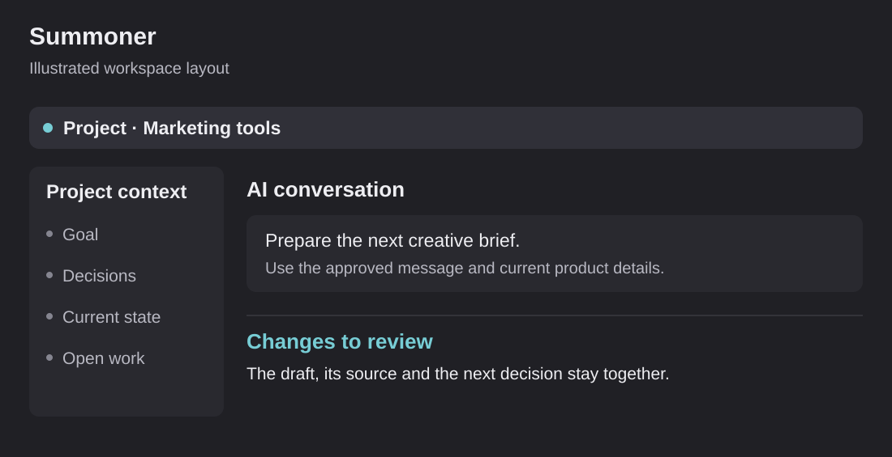

Summoner: my projects, chats and tasks in one place
A desktop app I am building to keep AI project work organized.

I use AI across a lot of projects. Keeping track of the chats, tasks, files and changes gets messy fast. I am building Summoner so I can see the work in one place.
I want to see the project, its current context, the conversation and the result without constantly rebuilding that picture across separate tools. The aim is a place where I can direct the work and review what came back.
The task I am designing for
A project has a goal, files, decisions, open tasks and changes that need review. A conversation is only one part of it. When the chat ends, the project should still have a clear state.
The workspace work includes project navigation, chats, tasks, model choice and reviewing changes. The current implementation direction is a native desktop shell with a web interface inside it. It builds on an open-source workspace foundation, with the product direction focused on project continuity and review.
I want to choose a project, give the assistant the information it needs, set a clear task and review what it changed.
Try the layout without opening private projects
The development includes a sample workspace so interface work can be tested without signing into real AI accounts or reading private project content. That is a useful product decision: we can judge the workflow before giving it access to actual work.
The sample workspace makes project navigation, conversations and task flow easier to review as a whole. It gives the development process a shared reference for how the experience should feel.
Project context and work records stay within the private workspace.
Preserve the work when several changes happen at once
The project has needed coordination across different areas. Separate changes can touch the desktop shell, the document view, the chat experience or the project state. I have worked on keeping those areas bounded and making integration a deliberate step.
That includes clear ownership, a current checkpoint and a record of reviewed changes. Each part of the work has a clear owner, so we can check the changes before combining them.
These habits matter to the product as well. An AI workspace should make the state of work clearer, not make it easier to lose track of what has changed.
What I want a project handoff to contain
Here is an original example of the handoff structure I am aiming for:
Scroll sideways to see all columns.
| Item | What a new session should be able to understand |
|---|---|
| Goal | The user's intended result in ordinary language |
| Current state | What exists now and what has been verified |
| Decisions | Accepted choices and the reason for them |
| Open work | The next task and anything holding it up |
| Changes | The files or outputs that need review |
| Review | The next check and the decision needed to move forward |
This sample handoff structure keeps the goal, decisions and next action together.
My contribution
I define the experience I want as an active user of AI project tools. I work through product and workflow choices, direct AI-assisted implementation, review the interface and push for clear state and usable results.
I have also worked on the surrounding operating rules for models, context, handoffs and verification. Those rules are useful only if the workspace makes them understandable and easy to follow. The software and the method need to support each other.
Building the workspace and the operating method together
The desktop prototype lets me work through the interface alongside the underlying project model. I use concrete tasks and reviewed checkpoints to connect product design with implementation.
The work builds on an open-source foundation while preserving its license and separating private project information from the workspace software.
Why I am building it
I want to get more work done without losing track of the project. Summoner brings the chats, tasks, project information and change review together.
The same idea appears in the marketing platform and personal brain. People should be able to pick up the work and understand what to do next.